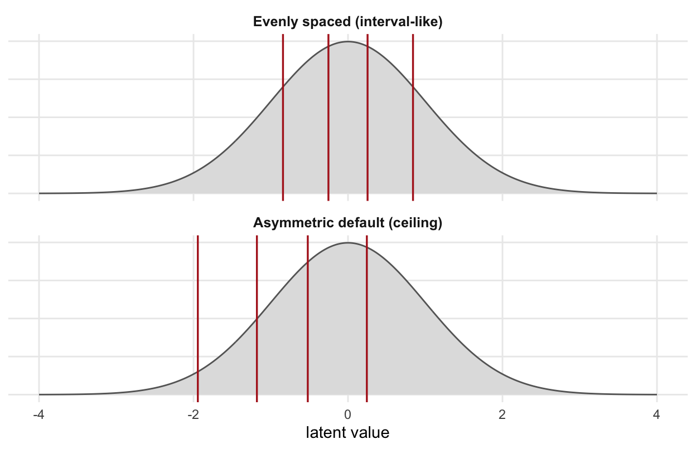
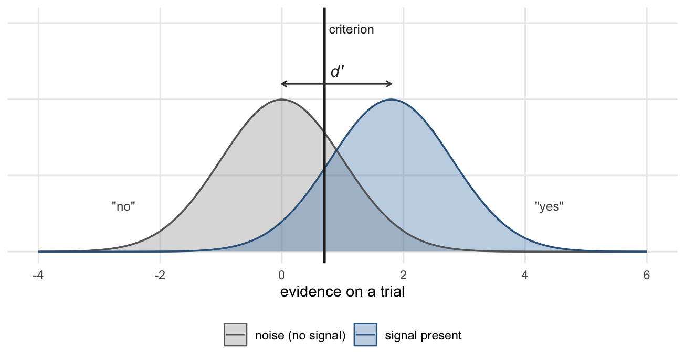

set.seed(1)
n <- 400
true_score <- rnorm(n, mean = 0, sd = 1)
head(round(true_score, 2))
#> [1] -0.63 0.18 -0.84 1.60 0.33 -0.822 Behind the Simulations
by Giorgio Arcara
Chapter 1 used two simulated datasets: a five-item satisfaction scale, and a detection task. This chapter explains how they are generated. You can skip it and lose nothing from the argument of that chapter — but if you want to understand why the simulations behave the way they do, or you want to build your own, this is where the machinery is.
2.1 Why simulate at all
There is one specific reason, and it is not convenience.
Real data never hands you the true score. That is the entire problem Chapter 1 is about: you observe \(X\), you want to know about \(T\), and \(T\) is permanently out of reach. Every reliability coefficient, every validity argument, every correction for attenuation is an attempt to reason about a quantity nobody can see.
In a simulation, you generate \(T\) yourself. That makes it the only setting in which you can check whether those techniques work — where you can compute a disattenuated correlation and then look up the answer. It is the difference between being told that Cronbach’s \(\alpha\) estimates reliability and watching it do so.
The cost is that simulated data is only as realistic as the model that produced it. So it is worth being able to read that model.
2.2 The Likert simulator
simulate_likert() generates responses to a multi-item scale in four steps. We will build each one by hand, then check the result against the package function.
Step 1: the true score
Every respondent gets a position on the latent construct, on a standardised scale. This is \(T\).
The units are arbitrary — a standard deviation of satisfaction. Nothing observable is in these numbers yet.
When you ask for groups, the group shifts this distribution. group_effect moves the mean; group_sd changes the spread:
group <- rep(c("standard", "redesigned"), length.out = n)
shift <- ifelse(group == "standard", 0, 0.5) # group_effect = 0.5
true_grouped <- rnorm(n, mean = shift, sd = 1)
tapply(true_grouped, group, mean)
#> redesigned standard
#> 0.4489 -0.0904Keeping those two knobs separate matters. Two groups can share a mean and differ in spread — some populations really are more homogeneous than others — and Chapter 1 uses exactly that case to show that a difference in scores is not always a difference in the construct.
Step 2: measurement error, one item at a time
Each item is an imperfect window onto the same true score. Every item gets its own independent error:
n_items <- 5
error_sd <- 1
latent <- matrix(true_score, nrow = n, ncol = n_items) +
matrix(rnorm(n * n_items, mean = 0, sd = error_sd),
nrow = n, ncol = n_items)
round(latent[1:3, ], 2)
#> [,1] [,2] [,3] [,4] [,5]
#> [1,] -1.71 -2.18 -0.28 -1.51 -1.00
#> [2,] -1.64 2.11 0.20 -1.74 1.18
#> [3,] 0.16 -2.69 -1.71 0.78 -0.73This is \(X = T + E\), written as a matrix. Each row is one respondent; each column is one item. The true score is constant along a row, and what varies is the error.
error_sd is the single most consequential argument in the function. It is the size of \(E\), and therefore it controls reliability: everything Chapter 1 says about noisy instruments is, mechanically, a statement about this number.
Step 3: the ordinal response process
Here is the step that matters most, and the one that is invisible in real data.
A respondent does not report a latent quantity. They pick a category. Somewhere in their head, a continuous impression gets converted into one of five boxes, and the conversion happens at thresholds — the points at which they switch from choosing “3” to choosing “4”.
thresholds <- qnorm(1:4 / 5) * 1.3 - 0.85
round(thresholds, 2)
#> [1] -1.94 -1.18 -0.52 0.24Those are the package defaults. Notice they are not symmetric: they sit well below zero, which means most of the latent distribution falls into the highest categories. That is deliberate, and it is what satisfaction and usability scales actually look like — ratings pile up at the top and the scale runs out of room. This is a ceiling.
Cutting the latent values at those thresholds gives the responses:
items <- matrix(findInterval(latent, thresholds) + 1L,
nrow = n, ncol = n_items)
table(items[, 1])
#>
#> 1 2 3 4 5
#> 32 45 68 88 167Compare that with evenly spaced thresholds — the idealised response process in which the item behaves like an interval-scale measure:
thresholds_even <- qnorm(1:4 / 5)
round(thresholds_even, 2)
#> [1] -0.84 -0.25 0.25 0.84
items_even <- matrix(findInterval(latent, thresholds_even) + 1L,
nrow = n, ncol = n_items)
table(items_even[, 1])
#>
#> 1 2 3 4 5
#> 111 61 62 46 120Identical people. Identical true scores. Identical measurement error. Completely different-looking data, because the response process differs. Figure 2.1 shows what the two sets of cut points do to the same latent distribution.

Step 4: the total
Finally the items are summed, which is what almost every scale does:
total <- rowSums(items)
head(total)
#> [1] 12 18 15 24 23 18Summing is itself an assumption worth noticing. It treats all five items as equally important and as equally spaced, which is the interval assumption arriving through the back door.
Checking against the package
The four steps above are exactly what the function does. To prove it, let us run them again in one block — in the order the function uses them, so that the random draws line up — and compare:
set.seed(1)
t_hand <- rnorm(400)
lat_hand <- matrix(t_hand, 400, 5) + matrix(rnorm(400 * 5), 400, 5)
total_hand <- rowSums(matrix(findInterval(lat_hand, thresholds) + 1L, 400, 5))
from_package <- simulate_likert(n = 400, n_items = 5, error_sd = 1, seed = 1)
all.equal(total_hand, from_package$total)
#> [1] TRUE
all.equal(t_hand, from_package$true_score)
#> [1] TRUEIdentical, down to the last respondent. (The rebuild is necessary because the group demonstration in step 1 drew its own random numbers, which shifts everything drawn afterwards — a small reminder that in simulation work the order of your random draws is part of your results.)
If you want to read the real thing, it is one command away:
behdslabs:::.simulate_likertI would encourage you to do that, in the spirit of the point made in Part 1 about AI-assisted code: you are responsible for analyses built on code you have not read.
What the arguments do
A compact summary of the two dials that carry the teaching load:
cronbach_alpha <- function(items) {
k <- ncol(items)
k / (k - 1) * (1 - sum(apply(items, 2, var)) / var(rowSums(items)))
}
for (e in c(0.5, 1, 2, 3)) {
d <- simulate_likert(n = 500, error_sd = e, seed = 3)
its <- as.matrix(d[, paste0("item_", 1:5)])
cat(sprintf("error_sd = %.1f -> alpha = %.2f, cor(total, true) = %.2f\n",
e, cronbach_alpha(its), cor(d$total, d$true_score)))
}
#> error_sd = 0.5 -> alpha = 0.93, cor(total, true) = 0.90
#> error_sd = 1.0 -> alpha = 0.80, cor(total, true) = 0.85
#> error_sd = 2.0 -> alpha = 0.52, cor(total, true) = 0.68
#> error_sd = 3.0 -> alpha = 0.33, cor(total, true) = 0.53And true_score, which is both returned and accepted as an argument. That is what makes a retest expressible: the same people, the same construct, a new occasion.
t1 <- simulate_likert(n = 300, seed = 21)
t2 <- simulate_likert(n = 300, true_score = t1$true_score, seed = 22)
identical(t1$true_score, t2$true_score) # same people, same construct
#> [1] TRUE
cor(t1$total, t2$total) # but not the same scores
#> [1] 0.8172.3 The detection simulator
simulate_sdt() implements the standard equal-variance signal detection model. The model is easier to see as a picture than as code, so here is the picture first (Figure 2.2).

The two parameters are separate by construction. Sensitivity (\(d'\)) is the distance between the curves: how distinguishable signal is from noise, for this person. Criterion is where the line sits: how much evidence they demand before saying “yes”. A cautious participant slides the line right and gets fewer hits and fewer false alarms. Their \(d'\) does not move.
From the picture, the two rates follow directly. The hit rate is the area of the signal curve to the right of the criterion; the false-alarm rate is the area of the noise curve to the right of it:
d_prime <- 1.8
crit <- 0.7
hit_rate <- pnorm(d_prime - crit) # signal curve, right of criterion
fa_rate <- pnorm(-crit) # noise curve, right of criterion
c(hit_rate = hit_rate, fa_rate = fa_rate)
#> hit_rate fa_rate
#> 0.864 0.242Trial counts are then binomial draws at those rates:
set.seed(5)
n_signal <- 100
n_noise <- 100
hits <- rbinom(1, n_signal, hit_rate)
false_alarms <- rbinom(1, n_noise, fa_rate)
c(hits = hits, misses = n_signal - hits,
false_alarms = false_alarms, correct_rejections = n_noise - false_alarms)
#> hits misses false_alarms
#> 89 11 26
#> correct_rejections
#> 74Going the other way — from counts back to \(d'\) — just inverts the two pnorm() calls:
qnorm(hits / n_signal) - qnorm(false_alarms / n_noise)
#> [1] 1.87Close to the 1.8 we generated with, and it would get closer with more trials.
Why proportion correct is the wrong summary
The simulator makes it easy to see why Chapter 1 warns against proportion correct. For a fixed \(d'\), proportion correct depends on where the criterion sits, and it is highest when the criterion is exactly halfway between the two curves:
prop_correct <- function(d, crit, signal_prob = 0.5) {
signal_prob * pnorm(d - crit) + (1 - signal_prob) * pnorm(crit)
}
crits <- seq(-2, 2, by = 0.5)
round(prop_correct(d = 1.8, crit = crits), 3)
#> [1] 0.511 0.533 0.578 0.649 0.732 0.797 0.815 0.776 0.699The same person, with identical ability, scores anywhere from 0.51 to 0.81 depending only on how willing they are to say “yes”.
This also explains a detail in Chapter 1 that might otherwise look arbitrary. To construct two participants with equal proportion correct and different \(d'\), you cannot pick the numbers freely: a weak detector at its best possible criterion sets a ceiling, and the strong detector has to be given a deliberately bad criterion to come down to it.
# A d' = 0.8 detector can do no better than this:
ceiling_08 <- prop_correct(d = 0.8, crit = 0.4)
ceiling_08
#> [1] 0.655
# What criterion drags a d' = 2.0 detector down to the same score?
uniroot(function(cc) prop_correct(2.0, cc) - ceiling_08, c(-3, 0))$root
#> [1] -0.475Which is where the values criterion = c(0.4, -0.475) in Chapter 1 come from — solved, not guessed.
2.4 Building your own
Both functions are deliberately small, and the point of this chapter is that you could have written either. If you want to explore a measurement question that neither covers, the pattern is the same one Chapter 1 describes in words:
- Generate the construct.
- Add whatever contaminates the observation of it.
- Apply whatever process turns that observation into a recorded value.
- Analyse the result as if you did not know steps 1 to 3 — then check your answer against them.
Step 4 is the one people skip, and it is the only one that tells you whether your analysis works.